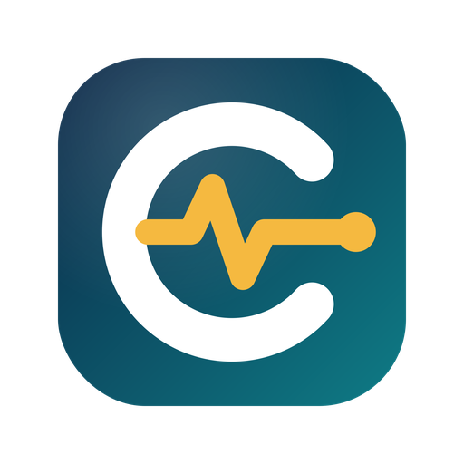
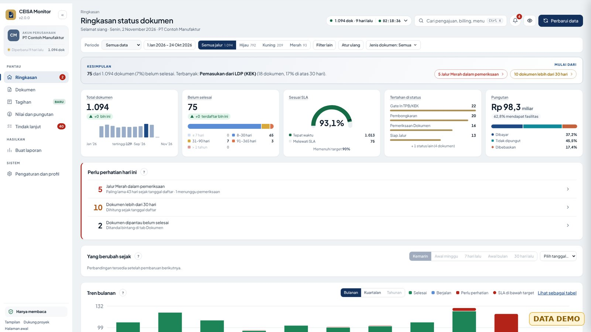
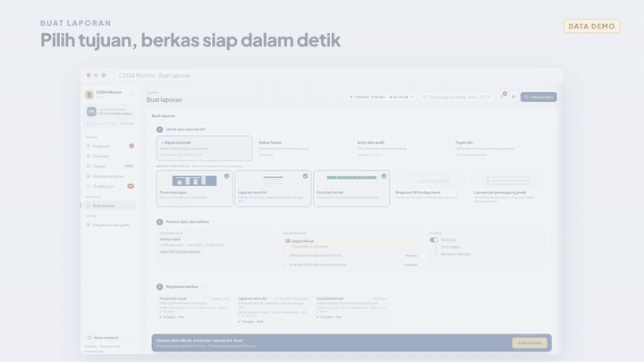
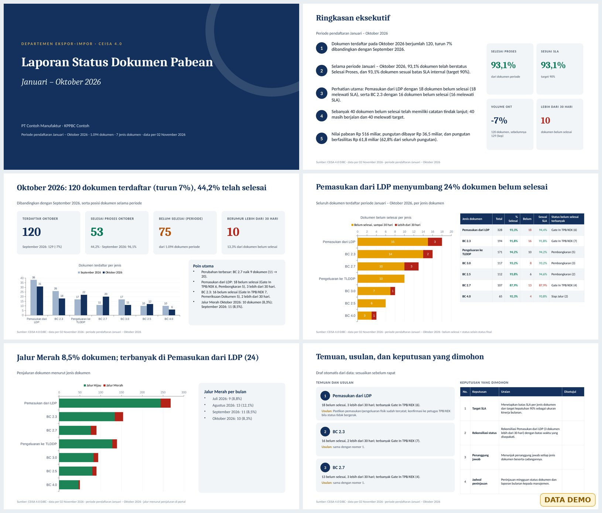

CEISA MonitorA Chrome and Edge extension that reads your CEISA 4.0 document list with your own login session, then builds a summary, today's priorities, follow-ups, per-owner tasks, meeting decks, formal reports, Excel files and WhatsApp messages. Everything runs in the browser, with no server.
The 2.0 interface is in Indonesian; English returns in a later version.
All screens use fictitious data labelled DATA DEMO.

Open documents, SLA compliance, document age, and the status where documents are stuck, opened by a one-sentence conclusion.

Red Lane documents still under inspection, documents older than 30 days, and the documents you watch.

Stage timeline from the portal history with time in each status, document contents, duties, follow-up, and billing.

Monthly meeting, daily update, archive and audit, or team tasks. The right files are selected and ready in seconds.

A WhatsApp message and Excel file per person. The Result column your team fills in is imported back into follow-ups.

About 15 slides with conclusion titles, a document-type comparison, findings, and decisions requested.
Chrome or Microsoft Edge 116 or later, only through the Chrome Web Store. Version 1 users are updated automatically and keep their data.
Details in SECURITY.md.